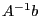
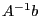
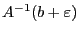
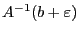
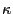

Next: The geometry of linear Up: Instability and the geometry Previous: Instability and the geometry
Solving linear systems is a very common sub-routine in any MI(QC)P-solver, as we have to solve many linear systems during the full execution of the algorithm.
So, consider that we have a linear system  with an
unique solution (i.e.
with an
unique solution (i.e.  is a square matrix with full rank), and you
want to evaluate how the solution to the system might change if we
perturb the right-hand side
is a square matrix with full rank), and you
want to evaluate how the solution to the system might change if we
perturb the right-hand side  . Since the system has a unique
solution, we know that given
. Since the system has a unique
solution, we know that given  , the solution will be , and
if we perturb
, the solution will be , and
if we perturb  with
with  , the solution will be
. A measure for the relative change in
the solution with respect to the relative change in the input
would be the ratio
, the solution will be
. A measure for the relative change in
the solution with respect to the relative change in the input
would be the ratio
The condition number for the optimal simplex basis in an LP is captured in the KappaExact attribute. A very large  value might be an indication that the result might be unstable.
When this is indeed the case, the best advice is to scale the constraint matrix coefficients so that the resulting range of coefficients is small. This transformation will typically reduce the value of the final basis; please refer to the Scaling section for a discussion on how to perform this rescaling, and also for caveats on scaling in general.